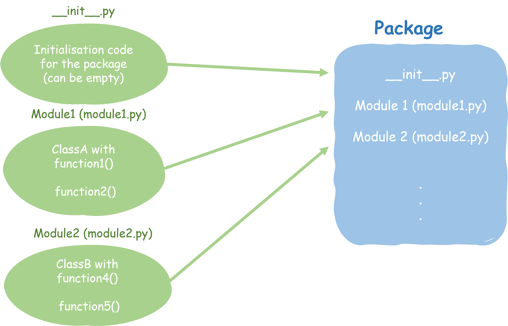

Python packages#
Python can be described as charged with batteries, to say that it already comes packed with a number of modules (functions and classes) to get you started. Still in every day use of Python, you will need additional external functionality which in Python is commonly imported through packages. Packages are the equivalent to libraries in R and can be compared to toolboxes in Matlab.
What is a Python package?#
Typically a Python package contains an initialisation file (init.py), and a number of modules (containing classes, functions and variables) stored in a *.py file.

Classes
Classes can be seen as containers of specific functions and variables. Let’s think of a class called AcousticWave which we want to use to describe a number of properties of an acoustic wave, like the wave length
class AcousticWave
Functions
In Python functions are defined as:
def function_name(v1, v2): results = some stuff is happening with the variables return results
Functions are starting with
deffollowed by the function name with the dependent variables in brackets. This line ends by:.
The following lines are indented to deliminate the space specific to the given function. The function end typically with areturncall.returndefines the output of the function (what is returned from the function).In a Python package, functions are specific to a class. In our example of the wave length, the function would be wave_length, dependent on the soundspeed c and the frequency f as wave_length \(= \frac{c}{f} [m]\)
def wave_length(c, f): return c / f
[!NOTE] Python functions compared to R and Matlab The way functions are written in Python is analoguous to R and Matlab:
R:
function_name = function(v1, v2){ results = some stuff is happening with the variables return(results) }
Matlab:
function [result] = function_name(v1, v2) results = some stuff is happening with the variables end
Variables
Variables can be user defined or defined by initial values. In our examples these would be the sound speed c and frequency f
For example imagine a class AcousticWave which we use to describe acoustic waves. The properties of the acoustic wave depend on variables, that we want the user to provide. These could be c the soundspeed in m/s and f the frequency in Hz. The properties we want to describe could be wave length defined by a function wave_length that depends on c and f
A very minimalistic example would be:
Tip
Naming convention for classes , funcitons and variables
Class names should normally use the CapWords naming convention, e.g. AcousticWave
Variable and Function names should generally by lowercase, with words separated by underscores, e.g. wave_length
A Python package contains one or more modules. A module is a .py file that contains reusable code, typically functions or models
Comparison using additional tools in Python, R, Matlab#
Python |
R |
|---|---|
import packages |
load libraries |
|
|
Specific examples: |
|
|
|